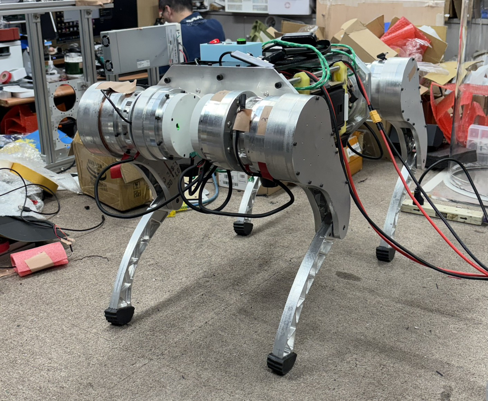
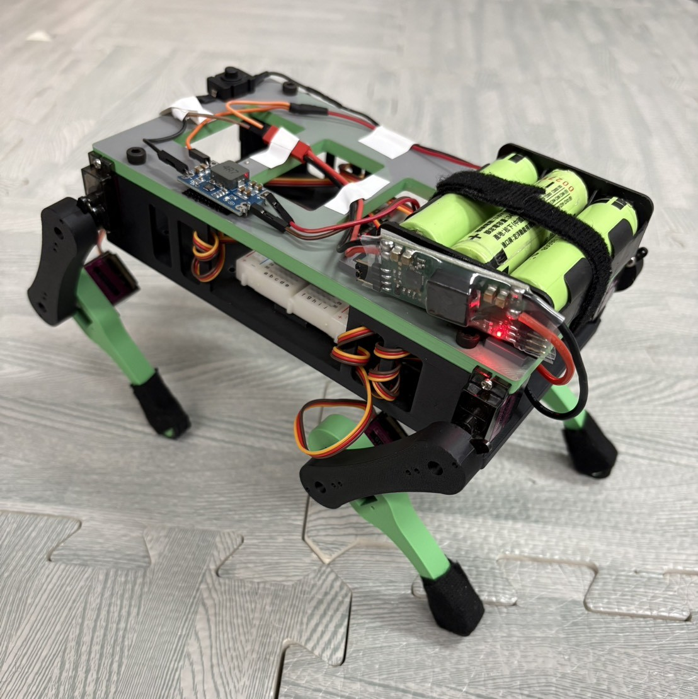
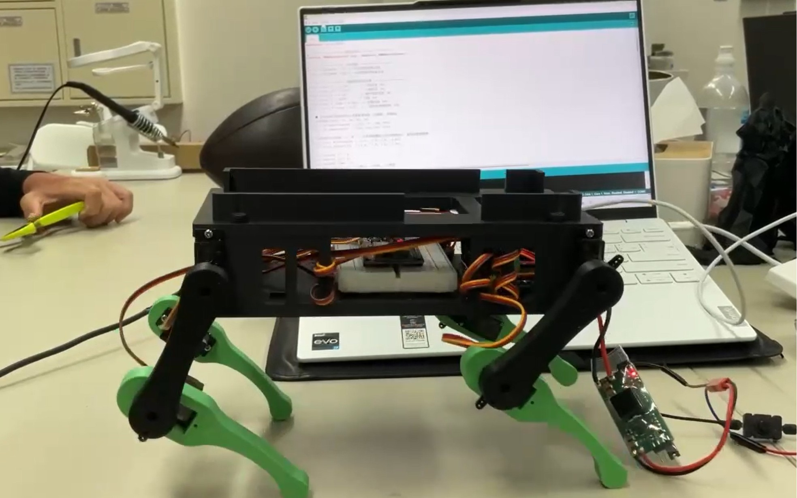
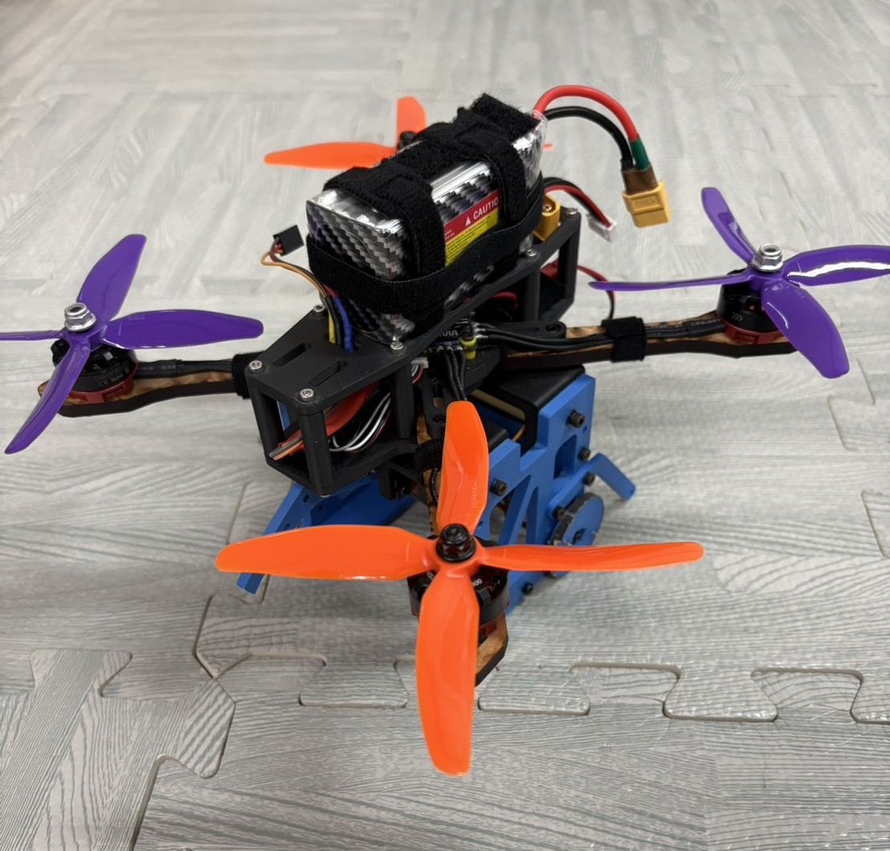

National Taiwan University Mechanical Engineering | Robotics Systems Portfolio
CHENG-HSUAN
LEE
Robotics systems applicant who builds full-stack physical robots: mechanism design, actuator packaging, embedded control, robot learning, experimental debugging, and team execution under real test pressure.
Profile
I turn ambiguous robot problems into buildable systems and testable decisions.
My strongest work sits at the boundary between mechanical design, control, and robot learning: ASR Lab quadruped locomotion research, a course-built quadruped robot dog, a ball-transfer quadcopter, a deployable transfer mechanism, and FRC competition robots. I repeatedly took roles where hardware, code, testing, and team coordination had to work together before a deadline, and my drone project became a reference point for many peer teams because the architecture and testing process were clear enough to learn from.
The pattern across my work is simple: define the physical constraint, build a repairable prototype, isolate failure modes with thrust tests, servo calibration, signal debugging, and motion checks, then turn the results into the next design decision. That is the engineering habit I want to bring into graduate-level robotics research.
Laboratory
NTUME ASR Lab | Control Systems Laboratory Experience
My most graduate-relevant experience is in NTUME ASR Lab, where I work on the Rifle 12-DoF quadruped platform across actuator/reducer hardware, motor communication, Isaac Lab locomotion training, ROS2 deployment, and sim-to-real failure analysis.
Learning-Based Quadruped Robot Integration
This work gives me a research view of robotics that course projects alone cannot provide: the same walking failure may involve reducer tolerance, motor-current limits, packet communication, IMU interpretation, reward design, or a mismatch between the simulated and physical standing pose.
The important signal is scope. I am not only using a robotics framework; I am learning how the hardware, controller, training run, log data, and physical robot failure point back to one another during real deployment.

Hardware and Actuation
Designed and fabricated motor reduction gearbox concepts, including cycloidal and planetary reducers, while learning how tolerance, backlash, shaft strength, and assembly quality affect robot behavior.
Robot Learning Workflow
Studied Isaac Lab locomotion workflows using DWAQ/PPO and imitation-learning experiments, with reward tuning around foot clearance, posture, contact behavior, torque, and action smoothness.
Embedded Motor Control
Gained experience in motor communication packet design, Arduino-based control board programming, calibration, speed/position/current feedback, and wiring-level fault isolation.
Deployment Debugging
Used ROS2 launch workflows, rosbag records, topic checks, TensorBoard logs, and hardware inspection to separate policy issues from actuator, sensor, communication, and assembly problems.
Featured Engineering Work
Four proof points for systems-level robotics ability.
Each project is written for quick review: what the problem was, what I contributed, and what the system proved in testing, evaluation, or competition.
Microprocessor Controlled Systems | Team Lead
Quadruped Robot Dog
Built a legged-robot stack that connected 3D-printed mechanical design, servo layout, inverse-kinematics reasoning, and ESP32-based embedded control.
Review signal: I connected legged-robot mechanics, servo calibration, IK thinking, and embedded control instead of treating them as separate tasks.
Click here: Robot dog case study

Practice of Mechanical Engineering | Team Lead
Quadcopter Ball-Transfer Drone
Led a full drone mission build from airframe and payload architecture to thrust testing, electronics integration, flight debugging, and final-run risk control.
Review signal: this was a reference-quality course build that made our architecture, testing approach, and integration decisions useful to other teams.
Click here: Drone system breakdown

CKHS Robotics Team | Programming and Strategy Lead
FIRST Robotics Competition
Built competition engineering judgment through programming, scouting, strategy, and mechanism prototyping in a high-pressure international robotics environment.
Review signal: I learned to make robotics decisions when software, field strategy, live data, driver needs, and robot limits all collide.
Click here: FRC leadership case study

Machine Design Theory | Team Lead
Foldable Ball Transfer Mechanism
Designed a deployable mechanism where packaging, stiffness, assembly sequence, and repeatable ball transfer all mattered at the same time.
Review signal: I turned a strict packaging constraint into a buildable mechanism architecture, then kept iteration grounded in fabrication reality.
Click here: Mechanism design case study

Capabilities
Build the robot, make it measurable, and push it toward real operation.
My strongest capability is full-stack physical system execution. I can move from mechanism and actuator decisions to embedded control, robot learning workflows, test evidence, and team-level debugging without losing the system view.
Mechanical and Actuation Systems
I design robot hardware around motion, assembly, tolerance, serviceability, and the control signals the mechanism must eventually obey.
- CAD, engineering drawings, 3D printing, machining, and fabrication-aware design.
- Cycloidal/planetary reducer concepts, actuator packaging, shaft reliability, and encoder alignment.
- Mechanisms that can be repaired, calibrated, and tested repeatedly instead of only looking good in CAD.
Robot Learning and Control
I connect simulation-side policy behavior with the physical assumptions that decide whether a robot can actually execute the motion.
- Isaac Lab, DWAQ/PPO, imitation learning, reward design, observation choices, and action-space tuning.
- ROS2 deployment context, rosbag/topic checks, TensorBoard run comparison, URDF, and Pinocchio.
- MATLAB, Simulink, Python, C++, and practical control implementation for physical prototypes.
Embedded Motor Systems
I treat motor behavior as data: command, readback, current, position, wiring, and controller setup all have to be trustworthy before judging the robot.
- ESP32, Teensy, Arduino, ODrive, PCA9685, RS485, UART, I2C, PWM, and motor packet routines.
- Speed, position, and current feedback used to separate control problems from hardware problems.
- Calibration, communication checks, signal-chain debugging, and wiring-level fault isolation.
Testing, Debugging, and Leadership
I am strongest when the system is messy: incomplete tests, hardware failures, noisy logs, and team decisions that need a clear next experiment.
- Thrust tests, servo calibration, leg motor fitting, load tests, and final-evaluation preparation.
- Failure-mode diagnosis using logs, videos, physical inspection, rosbag topics, and run comparisons.
- Team coordination across mechanical, electrical, software, strategy, and competition pressure.
Education
Mechanical engineering foundation for robotics research.
Department of Mechanical Engineering, National Taiwan University
Selected coursework: Microprocessor Controlled Systems, Automatic Control, Applied Electronics, Mechanism, Machine Design Theory, Engineering Graphics, Practice of Mechanical Engineering, Manufacturing Processes, Workshop Practice, Mechanical Engineering Laboratory I/II, Engineering Materials, Strength of Materials, Dynamics, Numerical Analysis, Fluid Mechanics, Thermodynamics, and Heat Transfer.
Taipei Municipal Chien Kuo High School
Developed early robotics experience through CKHS Robotics Team, FRC programming, strategy, scouting, and regional/international competition work.
Competitions and Recognition
Evidence that I can perform when the robot has to work in public.
FIRST Robotics Competition
- 2022 Sacramento Regional - Finalists and Industrial Design Award
- 2022 New Taipei City x Hon Hai Regional - Engineering Inspiration Award
- 2022 Carver Championship Division - Houston Championship qualification
- 2023 Los Angeles Regional - Excellence in Engineering Award
- 2023 San Diego Regional - Excellence in Engineering Award
Additional Competition Experience
- 2nd ISS Kibo Robot Programming Challenge Taiwan Preliminaries - Merit Award
- 58th Hsinchu County Science Fair, Biology Division - Second Place
These experiences built the foundation for my later interest in robotics, experimental constraints, and structured technical teamwork.
Application Materials
Technical reports organized for fast review.
Report titles and descriptions are presented in English for graduate application review. Final reports are listed first in the major project categories, followed by supporting records and other coursework evidence.
Resume
Cheng-Hsuan Lee CV
Open the academic CV with ASR Lab quadruped research, engineering projects, coursework, and competition record.
Major Project Reports
Core robotics and mechanism documents, ordered so the strongest project evidence is easiest to scan.
Quadcopter Ball-Transfer Drone
Course: Practice of Mechanical Engineering
Final report
Final Engineering Report
Full system documentation covering mission strategy, airframe and payload integration, testing, failure analysis, and final evaluation planning.
Experiment record Thrust-to-Throttle ExperimentMotor, propeller, ESC, and throttle-response testing used to guide propulsion decisions.
Test record Dynamic Testing After MidtermFlight behavior, drift, crash analysis, and reliability notes from system-level testing.
Debugging note Flight Controller, Motor Fault, and SBUS DebuggingEngineering note on signal-chain integration, motor troubleshooting, and control communication.
Personal record Personal Journal and FeedbackIndividual reflection on project leadership, weekly progress, and team execution.
Progress report First Progress ReportInitial concept selection and comparison across possible mechanical mission approaches.
Progress report Second Progress ReportEarly flight tests, ball-handling concept revision, and project direction changes.
Progress report Third Progress ReportHardware iteration, thrust experiment, remote-control packet debugging, and final strategy development.
Progress report Fourth Progress ReportThree-ball carrier updates, design comparison, final strategy, and future improvement plan.
Quadruped Robot Dog
Course: Microprocessor Controlled Systems
Final report
Final Robot Dog Report
Detailed report on mechanical architecture, embedded control, gait planning, hardware repair, and final demonstration.
Final presentation Final Presentation DeckPresentation version of the robot dog build, including mechanism updates and behavior demonstrations.
Midterm report Midterm Progress ReportEarly MATLAB kinematics, hardware updates, circuit layout, and planned next steps.
Foldable Ball Transfer Mechanism
Course: Machine Design Theory
Final report
Final Machine Design Report
Final written report on the polar-positioning arm system, mechanism design, fabrication, assembly, and evaluation.
Midterm report Midterm Design PresentationConcept-stage presentation covering container design, polar-positioning arm logic, and early architecture decisions.
Others
Additional coursework evidence
Supplementary technical documents grouped by course name, with final projects placed first where applicable.
Numerical Analysis
Coursework evidence in computational methods and numerical problem solving.
Principles of Air-Conditioning and Refrigeration
Coursework evidence in thermal systems, heat pump applications, and technical literature synthesis.
Final report
High-Temperature Heat Pump Application Report
Final report on high-temperature heat pump applications, industrial decarbonization potential, and use-case analysis.
Final presentation High-Temperature Heat Pump PresentationPresentation deck summarizing motivation, literature review, application scenarios, and future outlook.
Mechanical Engineering Experiments
Coursework evidence in measurement, instrumentation, data reduction, and experimental reasoning.
Contact
Open to graduate research opportunities in robotics and mechanical systems.
Based in Taipei, Taiwan, and available for research conversations, portfolio review, and graduate application correspondence.
Name
CHENG-HSUAN LEE
Taipei, Taiwan